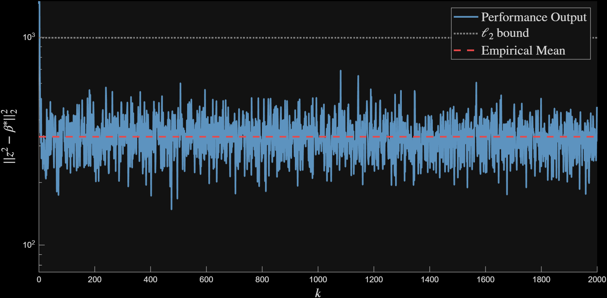
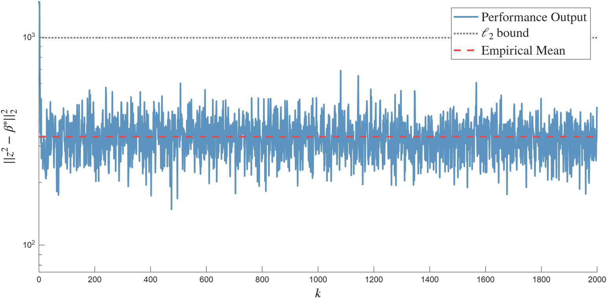
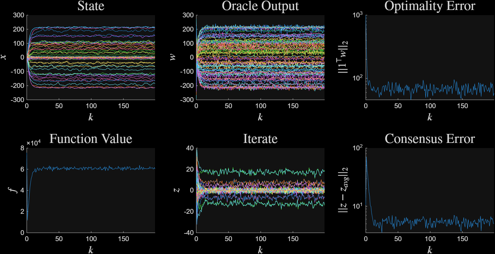
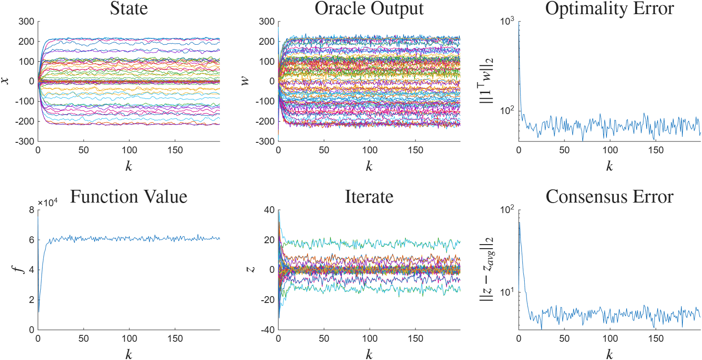
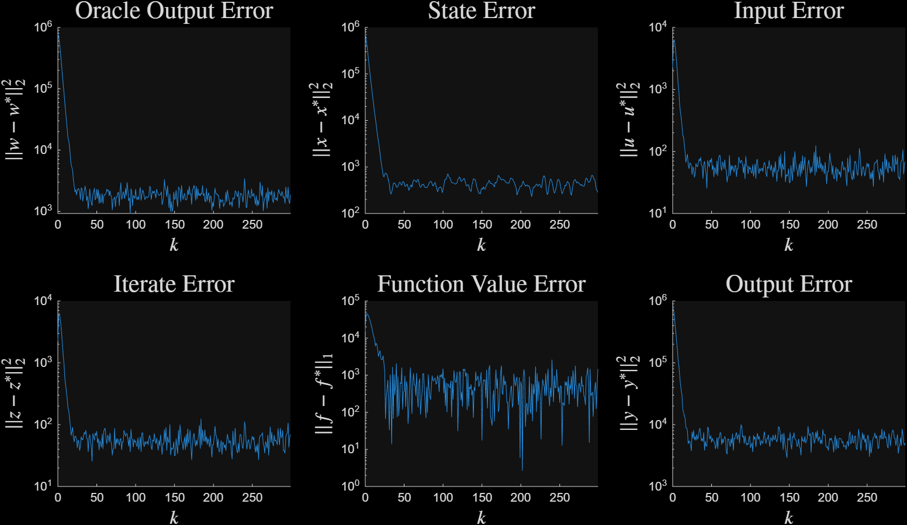
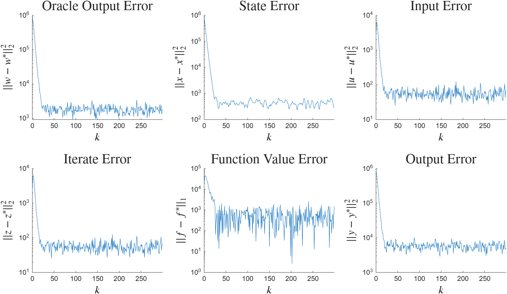

Stochastic Gradient Noise#
This synthesis example continues Analysis with Stochastic Gradient Noise. An algorithm to solve a composite optimization problem \(\min_{\beta \in \R^d} f(\beta) + g(\beta)\) must be synthesized with ordering \((\partial g, \nabla f)\).
The Operators and Network in the System are
Synthesis is performed with parameters \(m=1, L=10, \Omega = d I\). The controller is synthesized with the settings:
\(\nabla f\) must be evaluated explicitly,
The worst-case convergence rate must satisfies \(\rho < 0.9\),
The stochastic sensitivity should be minimized.
The output of Synthesis is a controller with description
The controller is used to solve a composite optimization problem in which \(f\) is a quadratic and \(g\) is the indicator function of an \(L_1\) ball. The gradient noise is i.i.d. normally distributed with covariance \(100 I\).
Figure 1 plots the squared error \(\norm{z_{p, k}}_2^2\) for 2000 time steps. The empirical mean (low dotted red line) with value \(150.62\) is computed by averaging the squared error from times 200 to 2000. The mean bound (high dotted gray line) is computed by \(d (\text{stdev}^2) \text{sensitivity}^2 = 40 (10^2) (0.3082)^2 = 380.0048\).

Figure 1 Long-time mean square error bounds#

Figure 1: Long-time mean square error bounds#
Figure 2 plots signals of the in the first 100 iterations of algorithm execution.

Figure 2 Signals in the noisy algorithm execution#

Figure 2: Signals in the noisy algorithm execution#
Figure 3 plots the tracking errors. After an initial transient, the tracking errors settle to a noise floor.

Figure 3 Tracking bounds in the noisy algorithm execution#

Figure 3: Tracking bounds in the noisy algorithm execution#